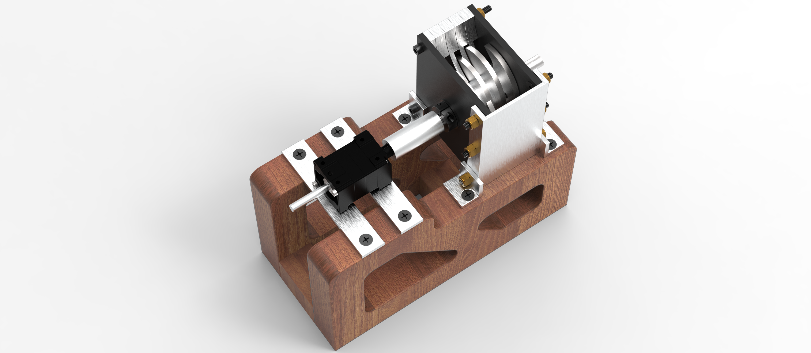
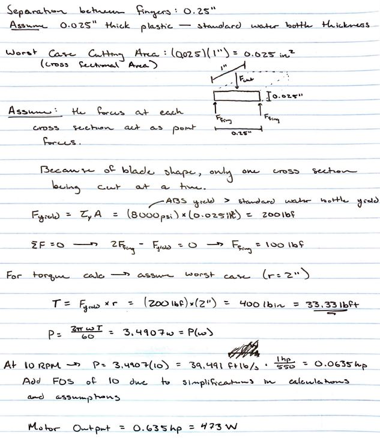
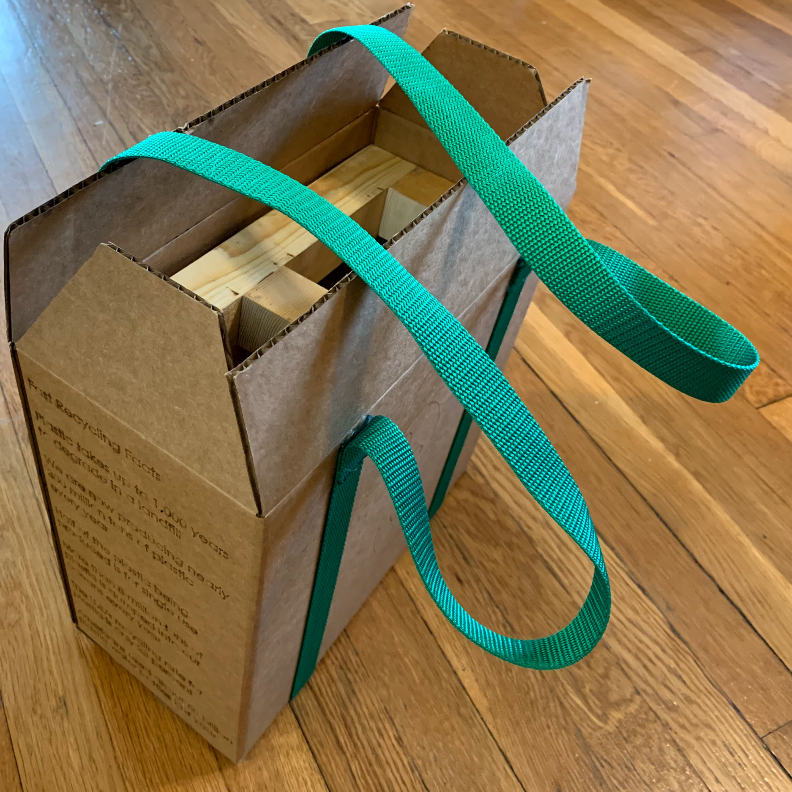

Manufacturing in Steeltown Final Project
Project Description
During the class we toured many different manufacturing facitilites in the Pittsburgh area and while visiting Covestro, an injection molding company, we were struck by how they are placing the burden of waste on the consumer. For this project, we were tasked to create a product to explore the product development cycle of a product, and with our expirence at Covestro, we wanted to make some way to turn waste plastic into something useful.
In our school's makerspace, we have an DIY injection molder and we wanted to make a shredder that would allow someone to take used plastic, shred it, and then put the shreds into the injection molder.
Teammates
The Design Process
 There were many important aspects that needed to be considered, especially if we were to deliver a working prototype. All these decisions had to be made in relation to eachother, but there were a couple major design decisions that had to be taken into consideration.
- We had to decide on the size and amount of blades that we had as that would greatly affect not only the amount of time required for to complete the manufacturing, but would aslo dramatically increase our costs. With our budget being $300, this was a major concern.
- One of the largest aspects that needed to be considered was how much torque was going to be required. This determination would be based on the required shear force for plastic and would affect not only our required power source, but also the size and locations of the shredder blades.
- Knowing the power required for the shredder, the motor selection became one of the most difficult parts of the process. Not only is it difficult to find a powerful motor for a decent price, but most of the solutions that we identified would require significant gear reductions to deliver the required torque. This gearbox
- If possible, addressing the safety concern would be ideal. Becuase this was being designed to shred plastic, it could pose a significant safety hazard from the blades themselves.
Manufacturing
The manufacturing of this shredder was quite involved as it required the CNC'ing of all the cutting blades and their interfacting fingers. Because of this, fixturing had to first be made for both the blades as well as the fingers. Once the blades and the spacers were made, we used a broach to make key slots. We would have liked to use a hex broach, but the machine shop only had key broaches.


Once all the machining was complete, we assembled the components and realized that the broaching occured at a slight angle. This was causing rubbing between the outer blades and the shredder walls. To correct this, we added a couple shims to the assembly to give enough space for the blade assembly to spin freely within the box.
Packaging
 One of the other important aspects of this project was to determine packagaing for the product. The goal for us was then to create packaging that not only created an enjoyable expirence to the consumer, but also have packaging that was sustainable in nature. That meant not using traditional packaging items, such as packing peanuts, as we wanted to have limited enviromental impact.
The strength of the package was bolstered by using nylon straps to act as support for the bottom of the box. These straps also doubled as a convienent way to carry the package. Another thing that we did was to place the shredder upsidown within the package. This meant that when the consumer opened it, there was a convienent handle for them to grab to safely lift the shredder from the package. Lastly, we added some recycling facts and suggestions on how to use the sgredder plastic on the sides of the box, and finished it with a logo on the front.
Completed Shredder
We were able to produce a working prototype that could handle a multitude of materials. From aluminum can walls, to water bottles, to water bottle caps, the shredder performed admirably. We did not push the shredder to its limits as we feared that the blades would fail due to only using a key. If we were to make a second version, we would use a hex shaft to resolve this. Overall, we were very happy with how well it worked.
If you have interest in making your own shredder, you can download everything you need here.